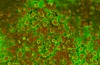

calcification

Definition: Calcification is the accumulation of calcium salts in a body tissue. It normally occurs in the formation of bone, but calcium can be deposited abnormally in soft tissue, causing it to harden. Calcifications may be classified on whether there is mineral balance or not, and the location of the calcification. Calcification may also refer to the processes of normal mineral deposition in biological systems, such as the formation of stromatolites or mollusc shells (see Biomineralization).
Source: Wikipedia
Wikipedia Page
Wikidata Page